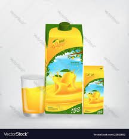
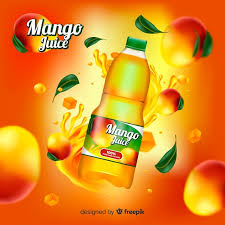

At JuiceJive, our mission is to harness the vibrant flavors of nature while promoting health and sustainability. Our diverse product lineup is centered around high-quality, fruit-based offerings that enhance the culinary experience and support overall wellness. Let’s take a closer look at the primary products produced by JuiceJive and explore their unique features, benefits, and the commitment to eco-friendly practices that underpin our brand.
Tropical Fruit Juices
One of our flagship products is our selection of tropical fruit juices. These juices are crafted from the freshest, locally sourced fruits, ensuring that every bottle is bursting with flavor and nutrients. Our range includes popular varieties such as mango, pineapple, passion fruit, and blended tropical mixes. Each juice is made with minimal processing to retain the natural taste and nutritional value of the fruit, which means no added sugars or artificial preservatives. The health benefits of consuming fruit juices are well-documented. According to research, fruit juices provide essential vitamins, antioxidants, and minerals that contribute to overall health. For instance, mango juice is rich in vitamins A and C, supporting immune function and skin health. Moreover, the natural sugars found in our juices provide a quick source of energy, making them an excellent choice for a refreshing drink after exercise or throughout a busy day.


Mango Jams and Sauces
JuiceJive takes pride in our mango jams and sauces, which are perfect for those looking to add a tropical twist to their culinary creations. Our jams are made from ripe, juicy mangoes, combined with just the right amount of sweetness and acidity to create a delicious spread for breakfast or a flavorful addition to desserts. These jams can be enjoyed on toast, used in baking, or as a filling for pastries, providing versatility in the kitchen. In addition to jams, we offer mango sauces that can enhance a variety of dishes. Whether used as a glaze for grilled meats, a topping for desserts, or an ingredient in salad dressings, our sauces bring a unique flavor profile that can elevate any meal. The use of high-quality ingredients and traditional cooking methods ensures that every jar reflects the authentic taste of mangoes, making it a favorite among consumers who appreciate gourmet products.
Natural Soap and Skincare Products
Understanding the importance of skincare, JuiceJive also offers a range of natural soaps and skincare products. These products are formulated with gentle, plant-based ingredients, free from harsh chemicals and synthetic fragrances. Our soaps are enriched with the nourishing properties of fruit extracts, providing not just a cleansing experience but also hydration and nourishment for the skin. The skincare line includes moisturizers and lotions that leverage the antioxidant-rich qualities of mangoes and other fruits. These products are designed to cater to a variety of skin types, promoting healthy, radiant skin while aligning with our commitment to eco-friendly practices. By prioritizing natural ingredients, JuiceJive aims to provide consumers with effective skincare solutions that do not compromise on safety or environmental responsibility.
Essential Oils
In addition to food and skincare products, JuiceJive produces essential oils derived from mangoes and other tropical fruits. These oils are extracted through steam distillation, ensuring that the purity and potency of the essential oils are preserved. They can be used for aromatherapy, massages, and skincare applications, offering a multitude of benefits. Essential oils have gained popularity for their therapeutic properties, including stress relief, improved mood, and enhanced relaxation. Mango essential oil, in particular, is known for its sweet fragrance and uplifting qualities, making it a perfect addition to aromatherapy practices. Additionally, our essential oils can be blended with carrier oils for topical applications, providing a natural alternative to commercial fragrances and skincare products.
Commitment to sustainability
At JuiceJive, sustainability is at the heart of everything we do. Our products are crafted using locally sourced ingredients, which not only supports local farmers but also reduces our carbon footprint. By prioritizing eco-friendly practices, we aim to create a positive impact on the environment while providing consumers with high-quality products they can trust. We utilize sustainable packaging solutions to further our commitment to the planet. Our bottles and jars are made from recyclable materials, and we encourage our customers to recycle after use. JuiceJive also engages in community initiatives that promote awareness about sustainability and healthy living, reinforcing our role as a responsible brand in the food and wellness industry.
Conclusion
In conclusion, JuiceJive is dedicated to producing a range of high-quality, natural products that enhance the flavors of everyday life while promoting health and sustainability. From our refreshing tropical fruit juices to our delicious jams, sauces, skincare products, and essential oils, each item reflects our commitment to quality and the well-being of our customers. By choosing JuiceJive, consumers can enjoy the vibrant tastes of nature while supporting a brand that prioritizes ecological responsibility and local sourcing. Whether you're looking to invigorate your diet, enhance your culinary creations, or nourish your skin, JuiceJive has something for everyone, bringing the essence of the tropics to your table and daily routine.